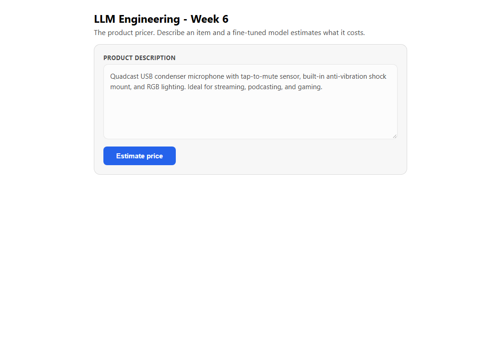

Week 7 · Project Build — The Open-Source Pricer, Step by Step
Fine-tune an open-source model with QLoRA in Python + uv (on a Colab/GPU), then point the Week 6 React pricer demo at your fine-tuned model's endpoint.
Build it yourself · Python + uv (QLoRA on a GPU) and the pricer demo UIThis is the Week 7 project. By the end of it you will have taken a free, open-weights language model, taught it one narrow skill - estimating the price of a product from its description - and ended up with something that holds its own against a frontier model many times its size. The technique is QLoRA: you freeze the big base model in a compressed 4-bit form and train only a tiny set of extra weights on top. The whole training run happens in Python (managed by uv) on a GPU, which is the honest, non-negotiable part of this week - you cannot do real fine-tuning on a laptop CPU.
Then comes the satisfying bit. You do not build a new user interface. You reuse the exact React product-pricer demo you built in Week 6 and simply point it at your freshly fine-tuned model instead of a hosted frontier model. Same screen, same button, new brain. This page is the two-track build guide that ties the week together; the full, line-by-line code lives on the day pages.
Build it step by step
The Week 7 project lives in the week7-py/ folder. QLoRA training needs a CUDA GPU (for example a free Colab T4), and the README has the full GPU steps. On a CPU-only machine you can only syntax-check the code:
cd week7-py
python -m py_compile src/day1_setup.py src/day3_4_train.py src/day5_evaluate.pyThis only parses the Python; the model is not trainable on a CPU-only machine, so nothing is actually trained or run locally.
There are two tracks. Track A is the real work of the week: fine-tune the model in Python on a GPU. Track B is short and honest - it reuses the Week 6 React app and points it at the model you just trained. Do Track A first; Track B has nothing to talk to until the adapter exists.
Track A - Python + uv (QLoRA on a GPU)
This track trains the model. Every step says what to type and what you should see. The full, explained code for each file is on the day pages - here we only list the moves in order. You need a GPU: a free Google Colab T4 is enough for a small run, and an A100 is what the instructor uses for the full three-epoch run.
- Open a GPU notebook Open a new notebook on
Google Colab and switch the runtime to a GPU
(Runtime → Change runtime type → T4 GPU). You can also run locally if your own machine has a CUDA GPU.
Confirm the GPU is visible:
You should seeimport torch print(torch.cuda.is_available(), torch.cuda.get_device_name(0))Trueand a device name such asTesla T4. - Add the libraries These are the packages every day of the week uses. Running locally with
uv, add them to your project:
uv add transformers peft trl bitsandbytes accelerate datasets wandb huggingface-hubtransformersloads the base model, peft provides the LoRA adapters,trlgives the trainer, and bitsandbytes does the 4-bit quantization.accelerateplaces the model on the GPU,datasetsloads the pricing data,wandbcharts the loss, andhuggingface-hublogs you in and stores the result. On Colab the same names install with%pip installat the top of the notebook. - Log in to Hugging Face Llama is a gated model: you must accept Meta's licence on
the model page (
meta-llama/Meta-Llama-3.1-8B) once, with the same account as your token. Create a token athuggingface.co/settings/tokens, store it as a Colab secret namedHF_TOKEN, then log in:
Without this you get afrom huggingface_hub import login login(hf_token, add_to_git_credential=True)401/gated-repo error when the model tries to download. - Load the base model in 4-bit This is the Day 1 setup. You describe the 4-bit
quantization with a
BitsAndBytesConfig(nf4, double-quant,bfloat16compute) and load the base with it:
You should see a memory footprint of aboutbase_model = AutoModelForCausalLM.from_pretrained( BASE_MODEL, quantization_config=quant_config, device_map="auto", )5,591.5 MB- the whole 8B model squeezed into roughly 5.6GB. The full file and a line-by-line walk-through are on Day 1. - Load the pricing dataset Reuse the dataset you curated in Week 6 and pushed to the
Hub (swap in your own username if you uploaded your own copy):
Each training row has adataset = load_dataset("ed-donner/pricer-data") train, test = dataset["train"], dataset["test"]textfield that ends inPrice is $NNNand a numericprice. The test rows stop atPrice is $so the model has to predict the number. - Set the LoRA config and launch training This is Day 3. You attach small
LoRA matrices to the attention projections, build TRL's trainer with a
completion-only collator (so the model is scored only on the price token), and start the run:
The full config, every hyperparameter, and the line-by-line explanation are on Day 3.lora_config = LoraConfig( r=32, lora_alpha=64, target_modules=["q_proj", "v_proj", "k_proj", "o_proj"], lora_dropout=0.1, bias="none", task_type="CAUSAL_LM", ) trainer = SFTTrainer(model=base_model, train_dataset=train, peft_config=lora_config, args=train_config, data_collator=collator) trainer.train() - Watch the loss and save the adapter This is Day 4. With
report_to="wandb"andlogging_steps=50, the training loss streams to Weights & Biases so you can watch it fall in real time. Withpush_to_hub=Truethe trainer pushes checkpoints to the Hub as it goes; at the end you push the final adapter:
The adapter is tiny - about 109MB next to the 5.6GB base - because you only trained the low-rank matrices. Monitoring and the key hyperparameters are covered on Day 4.trainer.model.push_to_hub(PROJECT_RUN_NAME, private=True) - Load the adapter and evaluate This is Day 5. Load the 4-bit base again, then layer your
trained adapter on top with
PeftModel.from_pretrained, and run the test set through the course'sTesterharness:
You compare the average dollar error against the Week 6 baselines and the frontier models. On the instructor's full run the fine-tuned model lands aroundfine_tuned_model = PeftModel.from_pretrained(base_model, FINETUNED_MODEL)$47average error - ahead of GPT-4o at about$76. The full evaluation and the final podium are on Day 5.
Track B - the React demo (Node + TypeScript)
Be clear with yourself about what this track is: it is not a new build. It is the same Node + TypeScript product-pricer you wrote in Week 6, reused unchanged. All you do is serve your fine-tuned model behind an endpoint that speaks the OpenAI protocol, and tell the server to use it. Keep this short - it really is just a redirect.
- Get the Week 6 demo Reuse the Week 6 project folder,
week6-ts/. If you are starting fresh, open it and install its dependencies with npm:
Nothing in the app's code needs to change for this week.cd week6-ts npm install - Serve your fine-tuned model Put your model (the 4-bit base with your adapter, merged or
loaded as a LoRA) behind an OpenAI-compatible endpoint. Any of these work: a vLLM server, a Hugging
Face inference endpoint, or
ollamarun locally. Each exposes an OpenAI-style route at/v1- for example Ollama serves it athttp://localhost:11434/v1. - Point the server at it The server reads three values from
week6-ts/.env. The OpenAI JavaScript SDK automatically honoursOPENAI_BASE_URL, so you do not touch any code - you only set environment variables:OPENAI_BASE_URL=http://localhost:11434/v1 OPENAI_API_KEY=not-needed-for-local FINE_TUNED_MODEL=your-fine-tuned-model-idFINE_TUNED_MODELis the id your endpoint advertises;OPENAI_API_KEYcan be any non-empty string for a local server. The server'spriceModel()picks upFINE_TUNED_MODELand the SDK sends the request to your base URL instead of OpenAI's. - Build and run it Build the React front end once, then start the API and the web server
in two terminals:
npm run build npm run api npm run webnpm run apistarts the Hono server (it prints the port it is listening on);npm run webserves the React page. Open the page, paste a product description, and click Estimate price - the number now comes from your model. - Same UI as Week 6 The screen is identical to Week 6 because it is literally the same app. The only difference is which model answered.

.env values set..env values do all the redirecting.What you built
You fine-tuned an open-weights model for one real task and wired it into a working product, across two stacks that never had to know much about each other. Track A did the learning; Track B did the showing.
- You trained a QLoRA adapter on a GPU: freeze Llama 3.1 8B in 4-bit
with bitsandbytes, add small
LoRA matrices with peft,
and train only those with TRL's
SFTTrainer. - Track A steps: GPU notebook,
uv addthe libraries, Hugging Face login for gated Llama, load the 4-bit base, load the pricing dataset, configure LoRA + launch training, watch the loss in Weights & Biases and push the adapter to the Hub, then load the adapter and evaluate. - The result is a tiny adapter (about 109MB) that, on the full run,
reaches roughly
$47average error - ahead of GPT-4o. - Track B reuses the Week 6 React + Node + TypeScript demo unchanged: serve your model behind an OpenAI-compatible
endpoint, set
OPENAI_BASE_URLandFINE_TUNED_MODELin.env, thennpm run apiandnpm run web. - Full code and explanations: Day 1, Day 3, Day 4 and Day 5.